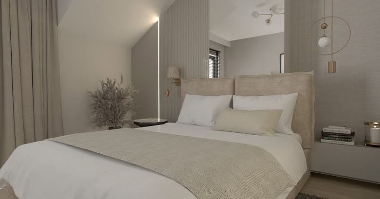
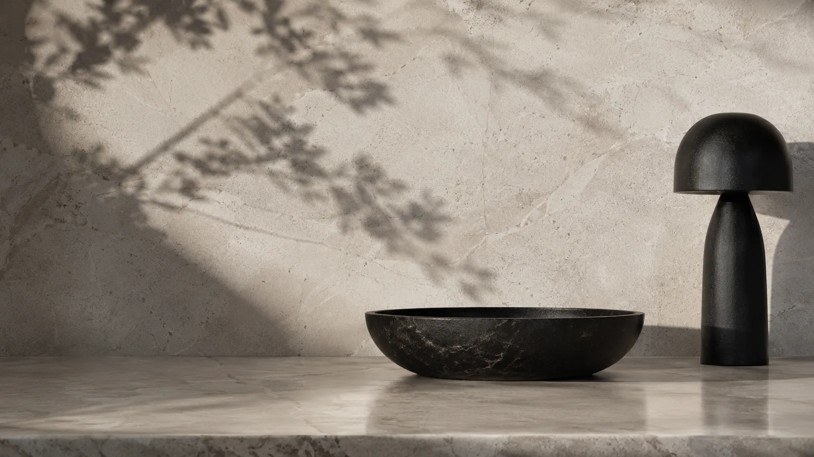

Mieszkanie
Jasna strefa dzienna
Strefa wypoczynku oparta na świetle, miękkich tkaninach i spokojnej bazie materiałowej.
 MONIKA SERBISTAPROJEKTOWANIE WNĘTRZ
MONIKA SERBISTAPROJEKTOWANIE WNĘTRZ

Portfolio
Dwie połówki w rzędzie, duże kadry i dyskretne metadane na zdjęciu. Kliknij realizację, aby zobaczyć ją w powiększeniu.
Wybrane prace
Duże kadry zostają najważniejsze. Opis dopowiada funkcję, charakter i skalę projektu bez zasłaniania wnętrza.
Mieszkanie
Strefa wypoczynku oparta na świetle, miękkich tkaninach i spokojnej bazie materiałowej.
Dom
Przestrzeń dzienna z dużymi przeszkleniami, naturalnym drewnem i czytelnym podziałem funkcji.
Strefa dzienna
Codzienna część mieszkania połączona w jedną kompozycję: gotowanie, stół i odpoczynek.
Kuchnia
Zabudowa, jadalnia i detale dobrane tak, żeby wnętrze było ciepłe, ale uporządkowane.
Łazienka
Kontrastowa łazienka z mocnym kamieniem, światłem i prostą geometrią wyposażenia.
Łazienka
Jasna baza, zaokrąglone linie i delikatny akcent kolorystyczny bez nadmiaru dekoracji.
Sypialnia
Prywatna strefa z przygaszonym światłem, rytmem lameli i miękką tekstylnością.
Sypialnia
Skosy, naturalne światło i zabudowa potraktowane jako atut, nie ograniczenie przestrzeni.
Poddasze
Motyw ścienny wpisany w architekturę pokoju, z zachowaniem oddechu i prostych linii.
Łazienka
Kompaktowa łazienka, w której drewno, kamień i skos tworzą spokojną całość.
Wnętrze komercyjne
Strefa oczekiwania zaprojektowana tak, żeby od wejścia budować poczucie jakości.
Gabinet
Techniczna funkcja gabinetu ułożona w czystą, jasną i spokojną przestrzeń pracy.
Salon
Drewno, kamień i światło pośrednie tworzą mocniejsze, bardziej wieczorne wnętrze.
Salon
Lekka zabudowa RTV, neutralne tkaniny i proporcje dopasowane do niewielkiej strefy dziennej.
Salon
Jasne tło, miękka sofa i zieleń jako akcent, który ociepla całą kompozycję.
Łazienka
Niewielka łazienka z mocniejszym kolorem, ale prostą funkcją i spokojnym światłem.
Sypialnia
Jasna sypialnia z drewnianym zagłówkiem i skosami, które budują przytulność.
Wnętrze komercyjne
Wejście i poczekalnia potraktowane jak wizytówka miejsca — czytelnie, ciepło i spokojnie.
Jadalnia
Stół, kuchnia i światło ustawione tak, żeby codzienna strefa była wygodna i reprezentacyjna.

Projekt nie musi krzyczeć, żeby zostać zapamiętany.
Omów swój projekt ↗